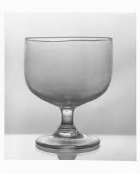
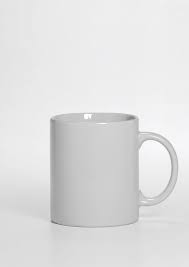
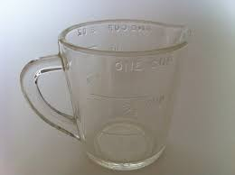

Wine glasses have several purposes, not only are they used to drink from but they also give a classy feel to the average home. Sometimes wine glasses can be given as gifts, especially to newly weds.
 This mug may look simple but it can be used for many things. Not only can you put cold beverages in this cup, but hot too! Coffee, tea, ramen, you name it! It can also be used as decoration or storage!

This empty glass measuring cup is very helpful not only in the kitchen but elsewhere too. You don't only have to use it for measuring, it works as a normal drinking or eating dish. This measuring cup is oven and microwave safe as well!